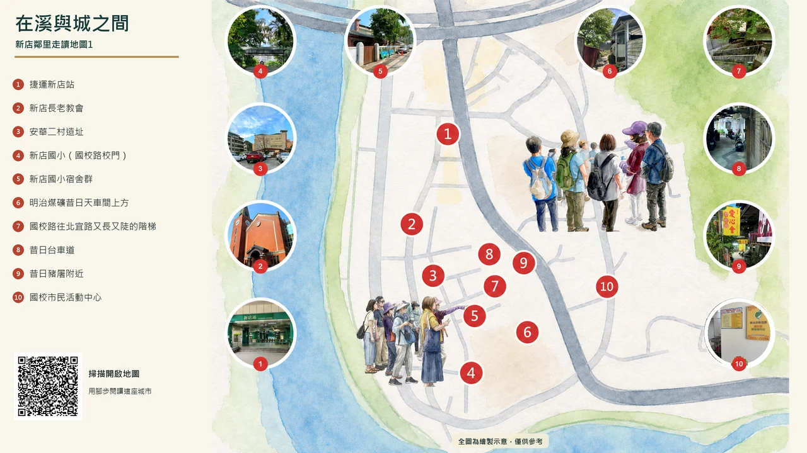
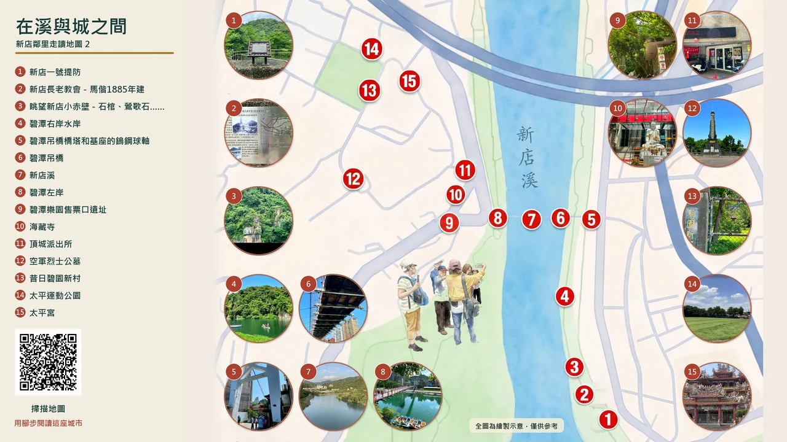
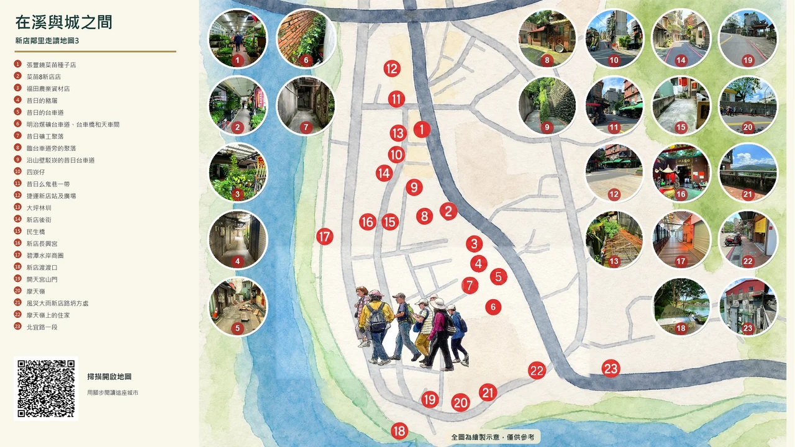
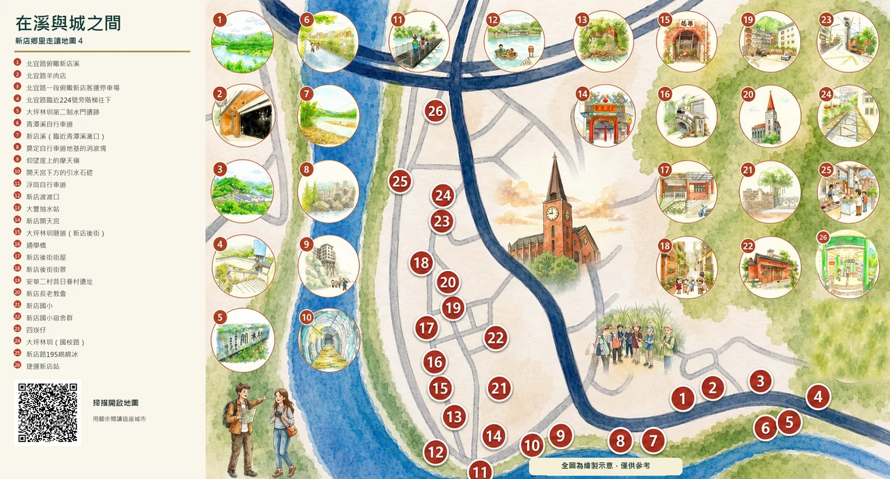

走讀地圖 1
流域鄰里工作坊1：國校里
走訪國校里聚落，認識明治煤礦遺址、台車道及國校路舊宿舍群；學習社區資源盤點與口述歷史訪談。

點擊放大地圖
開啟 Google 地圖
掃描地圖，用腳步閱讀這座城市
在溪與城之間
沿著新店溪、老街、水圳與聚落，一張地圖就是一段地方記憶。點開地圖仔細閱讀，或掃描 QR Code 帶著地圖出發。
走讀地圖 1
走訪國校里聚落，認識明治煤礦遺址、台車道及國校路舊宿舍群；學習社區資源盤點與口述歷史訪談。

點擊放大地圖走讀地圖 2
探索碧潭及新店溪水岸環境，了解新店水患歷史、一號堤防、小赤壁及碧潭吊橋等地景變遷，進行新店溪水環境觀察與紀錄。

點擊放大地圖走讀地圖 3
走讀新店路、新店後街、新店渡、摩天嶺及周邊水岸，透過踏查、訪談與口述歷史採集有關新店溪、渡口與居民生活記憶、產業變遷及韌性防災。

點擊放大地圖走讀地圖 4
走訪北宜路、斗門頭、開天宮、新店長老教會及大坪林圳沿線，探討水圳系統、聚落發展與地方信仰的關聯，進行故事採集與環境記錄。

點擊放大地圖